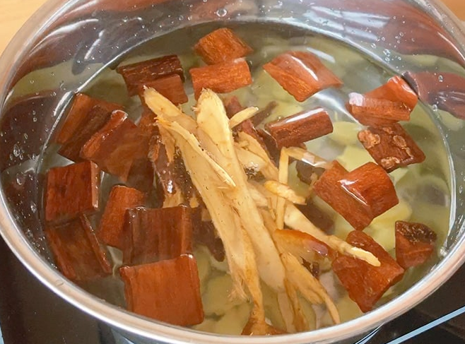
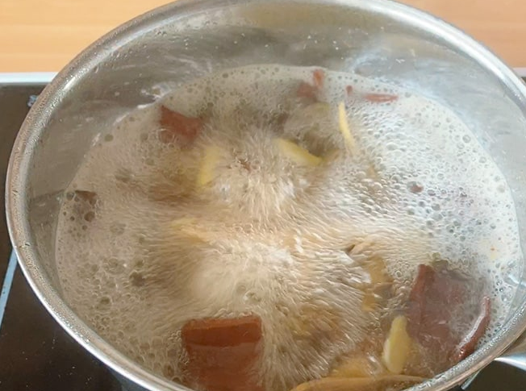
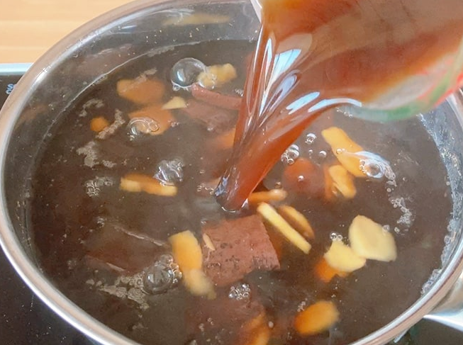
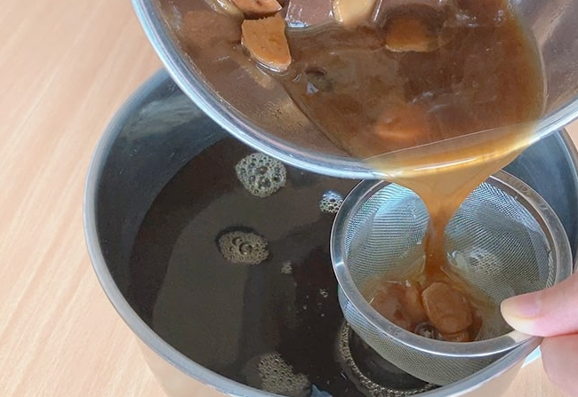
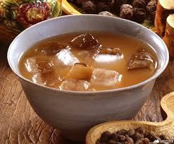

레시피  1. 물 1리터에 모든 재료를 넣고 끓여 준다.  2. 끓기 시작하면 약불로 줄여서 1시간 동안 끓여 준다.  3. 끓어서 줄어든 물에 매실청을 넣어 준다. 끓기 시작하면 다시 약불로 30분 동안 끓여 준다.  4. 체에 걸러서 물만 용기에 옮겨 준다. 컵의 20%정도만 제호탕을 채우고 나머지는 물과 얼음으로 채워준다.  *****완성*****